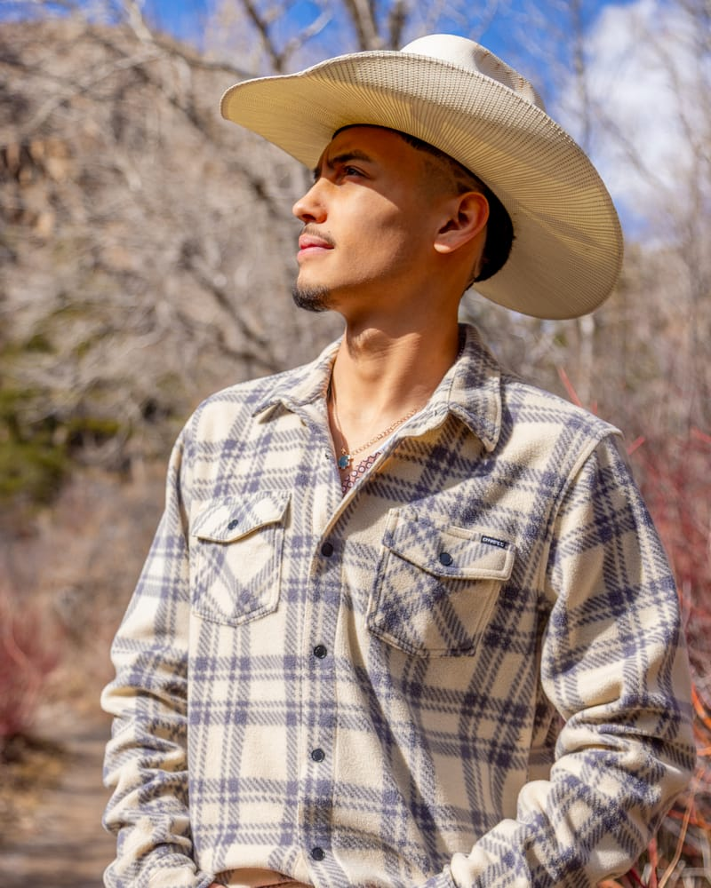
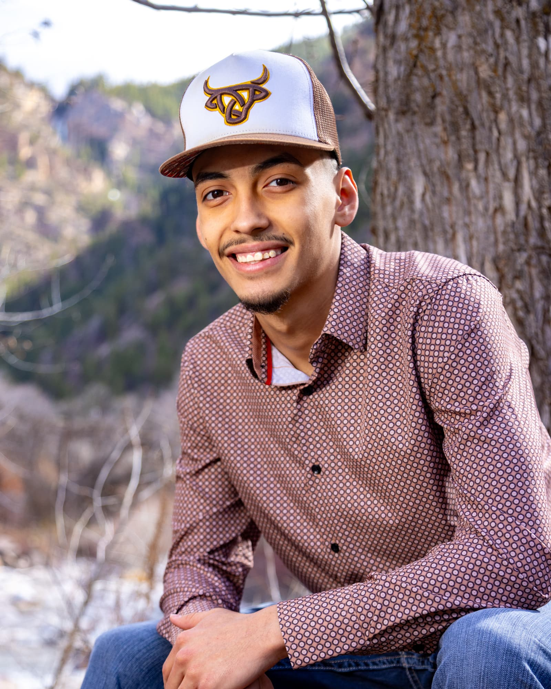
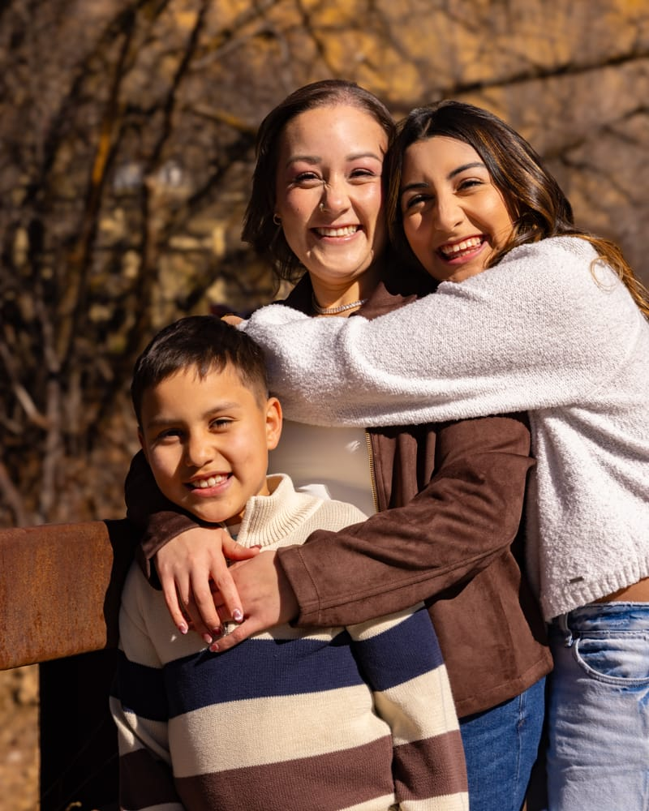
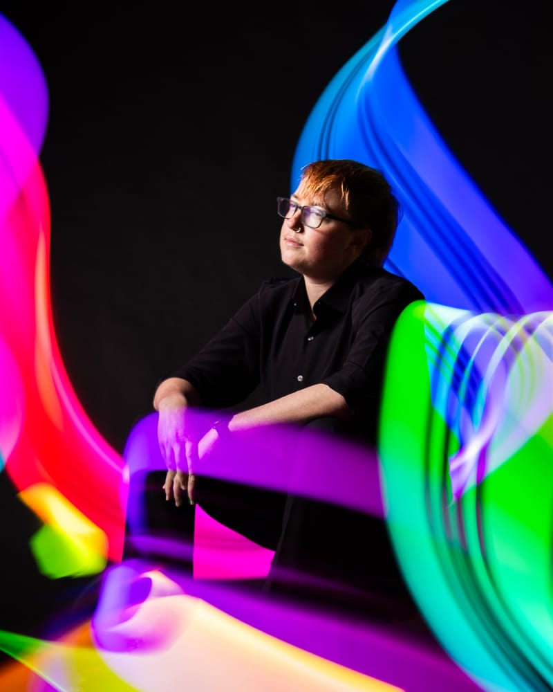

Seniors & grads
Celebrate this milestone with portraits that feel like you: confident, relaxed, and full of personality.
I guide you through every pose so you never feel awkward on camera.

From seniors and families to artists, couples, and more, these portrait packages are designed for every story, every background, and every walk of life.

Celebrate this milestone with portraits that feel like you: confident, relaxed, and full of personality.

Patient, comfortable sessions for families and kids of every age.

Capturing your essence in every light.
Every session includes posing guidance from start to finish and professionally edited, high-resolution images.
$300
$450
$600
Package prices cover one person. Each additional person adds $100. For example, a family of four on Package 2 is $450 + 3 × $100 = $750.
Real stories from the families and seniors who have stepped in front of my lens.
“I had such an incredible experience shooting with MBJ Photo. Marco is so personable and makes you feel comfortable right away, so you can truly relax and be yourself. He brings out your confidence so naturally and makes you feel like a real model. His artistic vision is what really sets him apart—the way he captures you is honestly amazing. When I received my photos I thought, ‘Wow, is that really me?’ 5 out of 5 stars—if I could rate him higher, I would. I highly recommend him if you want to feel confident, creative, and see yourself in a whole new light.”
“Working with MBJ Photo was an amazing experience. He did an incredible job making us feel comfortable, and everything felt very natural. He was so encouraging and the best hype man—the whole session felt more like hanging out than a formal shoot. I’ll definitely use him for any future photos.”
“We have used MBJ Photo for our family pictures and kids’ pictures for years now. We always appreciate the attention to detail to capture the perfect shot. He’s patient and professional, and our photo shoots are always comfortable and accommodating, making sure we’re happy with the pictures and poses. We will continue to book our sessions with MBJ Photo in the future.”
“Hello, my name is Geovanni. I asked Marco to take my senior pictures. Not knowing what was going to happen or if I would even like my pictures, I was very nervous—but Marco helped me feel comfortable by talking with me and asking questions. He was very communicative, asking me and helping me find spots to take my pictures. He’s a great photographer and I really loved my photos.”
I believe that every senior portrait, family portrait, or any portrait for that matter is a unique story waiting to be told. My approach ensures that your memories are captured with a genuine, authentic touch that resonates for generations to come.
Marco Beltran Jurado, MBJ Photo
Tell me what you have in mind and I’ll get back to you to set a date and location. Sessions available in Grand Junction, Vail and surrounding areas.
Estimated total
From $300
Choose a package and the number of people to see your total.